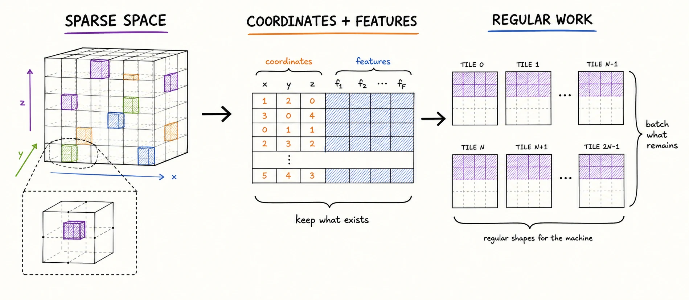
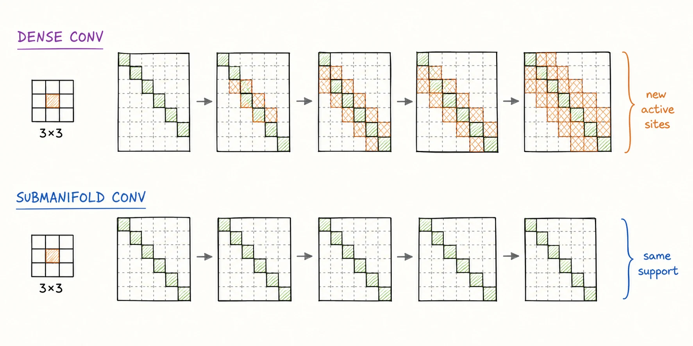
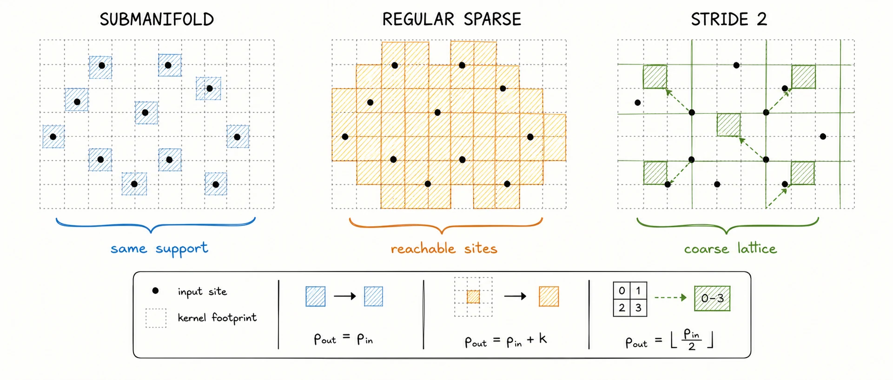
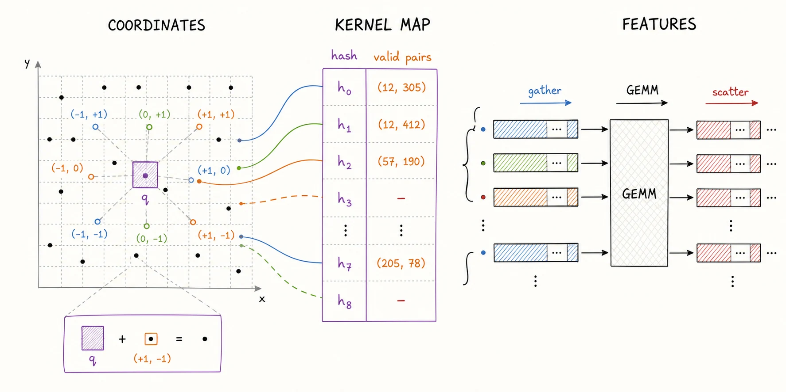
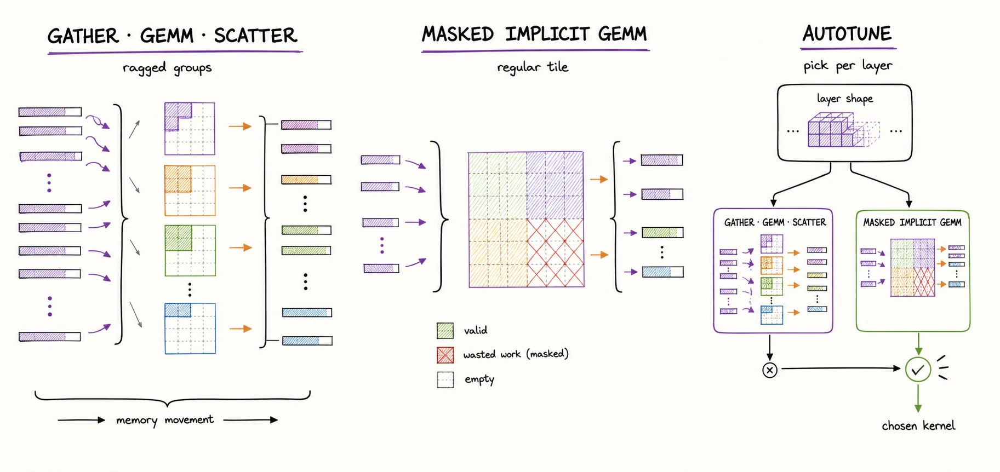
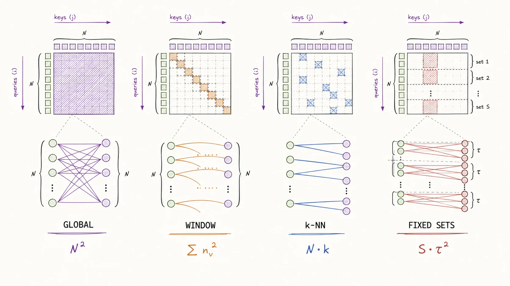
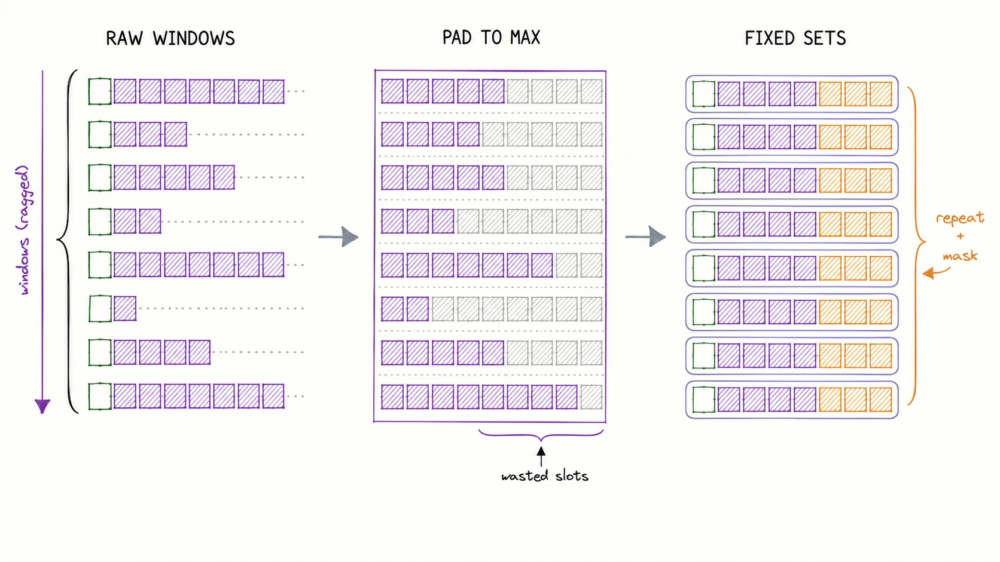
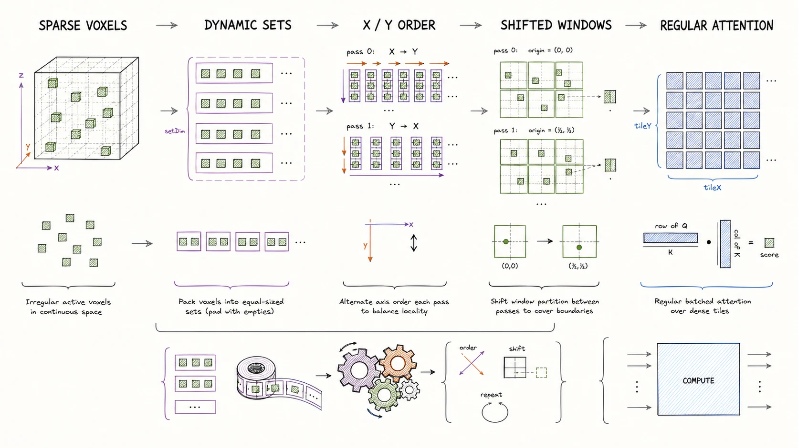

A visual worklog on irregular computation
From Sparse to ...
How sparse convolution and sparse attention turn empty 3D space into work a GPU can actually execute.

A LiDAR scan is not a small image with missing pixels. It is a measurement of visible surfaces: thin, irregular, and dominated by empty space. The first generation of 3D networks treated that emptiness as an implementation detail. The next generation made it part of the tensor definition.
This article follows that change all the way down. We will start with the operator, build the kernel map by hand, examine the GPU dataflows used by mature libraries, and then ask why attention inherited many of the same problems. DSVT appears near the end—not as the destination, but as one revealing answer to the regularization problem.
01
Dense convolution invents data where the sensor saw nothing
Take the slide-deck example: roughly 4,200 occupied BEV cells inside a 360 × 360 grid. Only 3.24% of the lattice contains a return. A dense tensor still allocates and processes all 129,600 cells.

The cost is not only wasted multiplication. A regular 3 × 3 convolution produces an output wherever its receptive field contains at least one non-zero input. One active cell can therefore activate nine outputs. The next layer sees those new outputs as valid input and expands again.

Three things happen together: thin surfaces become thick feature volumes; disconnected returns begin to merge; and every later layer inherits a larger active set. Sparsity decays with depth precisely where the network is supposed to exploit it.
02
Sparse convolution is coordinate algebra
A sparse tensor separates where a feature exists from what the feature contains. In COO-like notation, the coordinate matrix C has one integer row per active site, while the feature matrix F stores the corresponding vectors.
C = [ bi, xi1, …, xiD ] ∈ ℤN×(D+1)
F = [ f1, …, fN ]T ∈ ℝN×C
Now define an input support Cin, an output support Cout, and a set of kernel offsets K. The generalized sparse convolution is:
yu = Σδ∈K, u+δ∈Cin Wδxu+δ, u∈CoutThe multiplication is ordinary. The operator’s behavior comes from the policy used to construct Cout. This single point separates the main sparse-convolution variants.

A practical backbone therefore alternates two roles. Submanifold layers do most of the within-stage feature learning. Strided sparse layers change scale between stages. Inverse or transpose sparse convolutions reuse a previous coordinate relationship in reverse for U-Net decoders, reconstruction, or completion.
This pattern is the sparse analogue of a dense ResNet pyramid, but with a crucial extra state: every stage owns a coordinate set as well as a feature tensor.
03
The kernel map is the hidden operator
Dense convolution knows that every offset is valid, so an implementation can derive memory addresses arithmetically. Sparse convolution must first discover which input-output pairs exist. For every kernel offset δ, it builds a relation:
Rδ = { (i, j) | Cin[i] = Cout[j] + δ }
The coordinate engine usually inserts coordinates into a hash table or sorted map, queries offset neighbors, removes duplicates, and emits input/output row indices. The feature engine groups those pairs by offset, gathers feature rows, multiplies by Wδ, and scatter-adds the partial results.
This creates two independent performance clocks:
- Mapping time. Hashing, sorting, deduplication, allocation, and kernel-map construction scale with the active coordinates and the kernel volume.
- Feature time. Gather, matrix multiplication, and scatter scale with the number of valid pairs and the channel dimensions.
Early layers with few channels are often mapping- or memory-bound. Deeper layers with larger channel matrices can become compute-bound. A single “sparse FLOP count” hides this transition.
Why cache the map?
Residual blocks commonly repeat the same active coordinates and kernel shape. A coordinate manager can cache Rδ and reuse it across layers, amortizing the neighbor search. The cache is less useful after striding, pruning, generative expansion, or any operation that changes the support.
Why the GPU still complains
Each offset contains a different number of valid pairs. A gather-GEMM-scatter implementation therefore launches many matrices with uneven row counts and moves feature vectors explicitly. It is flexible, but the hardware sees small GEMMs and irregular memory access.
Masked implicit GEMM takes the opposite approach: encode valid connections as masks and map the convolution into larger, more regular tiles that suit Tensor Cores. It can trade redundant arithmetic and mask processing for better utilization. Modern systems increasingly choose between these dataflows per layer instead of insisting on one universal kernel.

04
The operator matured; the systems kept moving
The history of sparse convolution has two phases. The first established the semantics of active sites and submanifold support. The second tried to make those semantics fast, general, and survivable inside real software stacks.
Spatially sparse CNNs
Benjamin Graham’s early work stores only active features and performs computation around those sites, first for 2D handwriting and then for sparse 3D inputs. The basic idea predates today’s LiDAR tooling.
Submanifold sparse convolution
Graham and van der Maaten make the output support equal to the input support for stride-1 layers. This stops dilation and enables deep networks on thin surfaces without progressively filling the volume.
SECOND and spconv
Voxel-based 3D detection turns sparse 3D backbones into a practical default. The spconv ecosystem becomes deeply embedded in autonomous-driving codebases such as CenterPoint and OpenPCDet.
MinkowskiEngine
Generalized sparse convolution expands the abstraction to arbitrary dimensions, kernel shapes, pooling, pruning, transpose operations, and 4D space-time. Coordinate management becomes a first-class subsystem.
spconv 2.x, TorchSparse, TorchSparse++
Progress moves below the operator: Tensor Core mapping, implicit GEMM, locality-aware feature movement, mixed precision, kernel generation, and per-layer autotuning.
What should a practitioner use?
spconv 2.x is the pragmatic starting point for NVIDIA-based outdoor 3D detection. It fits the OpenPCDet and MMDetection3D world, provides optimized native and implicit-GEMM paths, and supports reduced precision. Its speed does not make the operators portable: deployment still needs a compatible sparse runtime or plugins.
MinkowskiEngine is the stronger research abstraction when the problem needs generic 3D or 4D sparse tensor algebra, custom regions, segmentation, reconstruction, or coordinate-map reuse across a complex topology. That breadth comes with a heavier build and version-compatibility surface.
TorchSparse++ is the systems-first option. Its kernel generator and autotuner search across dataflows, targeting the fact that the best execution strategy changes with layer shape, precision, and hardware. Its author-reported performance is strong; its downstream ecosystem is smaller than spconv’s.
SparseConvNet remains historically important and useful for understanding the original rulebook model, but it is no longer the default foundation for a new production stack.
| Need | Reasonable first choice | Verify before committing |
|---|---|---|
| LiDAR detection | spconv 2.x | Exact CUDA, precision, and deployment path |
| Generic 3D / 4D research | MinkowskiEngine | Build matrix and coordinate overhead |
| Kernel-level latency study | TorchSparse++ | Model coverage and target-GPU benchmark |
| Standard ONNX / TensorRT graph | Dense pillars or a regularized transformer | End-to-end accuracy, not backbone latency alone |
05
Attention removes the lattice, not the irregularity
A sparse transformer begins with an appealing observation: if every occupied voxel is already a row in F, treat those rows as tokens. Empty cells disappear from the sequence, and attention can mix information over a larger receptive field without repeatedly downsampling the XY plane.
For a query voxel i, one attention head computes:
αij = softmaxj∈N(i) ( qiTkj / √d + b(Δpij) )yi = Σj∈N(i) αijvjThe content-dependent weight αij is the main modeling difference from convolution. A convolution learns one matrix per discrete offset. Attention lets the same two positions interact differently depending on their features.
But three design choices sit outside the equation:
- Neighborhood.
N(i)decides who can communicate and therefore where sparsity actually enters the operator. - Geometry. Attention is permutation-equivariant without positional information. Relative offsets or coordinate embeddings must restore 3D metric structure.
- Batching. Physical neighborhoods contain different token counts. Efficient QKV kernels expect rectangular tensors.

The four common neighborhood policies
Global attention is conceptually clean and computationally wrong for high-resolution outdoor voxels. Even N = 4,200 produces 17.6 million scores per head per layer.
Window attention bounds the spatial extent and changes the cost to Σwnw2. It inherits scene-dependent occupancy: a road window may contain almost nothing while a window around several vehicles is dense.
k-NN or radius attention provides a geometric neighborhood with roughly stable degree. Once the graph exists, the tensor is regular enough; finding neighbors and gathering them is the irregular, often deployment-hostile part.
Fixed-length set attention sorts and partitions local tokens into blocks of size τ. Its cost is approximately O(Nτd), and standard batched attention can process every set. Remainders require duplicated indices and masks; disconnected sets require deliberate communication between layers.
How the idea evolved
ViT established the image-as-token-sequence view, but its global dense attention assumes a manageable patch count. Swin replaced global attention with equal 2D windows and shifted the window boundaries between blocks. This made cost linear in image size and provided a communication path across windows.
VoTr brought local and dilated attention to sparse voxels and introduced Fast Voxel Query to accelerate neighborhood lookup. SST used regional grouping to build a single-stride sparse transformer, motivated by the fact that a four-meter vehicle is tiny inside a roughly 150-meter scene. Receptive field comes from attention rather than repeated XY downsampling.
06
The central systems problem is regularizing unequal work
Sparse convolution and sparse attention appear to be different families, but their systems problems rhyme. Sparse convolution groups a variable number of valid pairs for each kernel offset. Window attention groups a variable number of tokens for each spatial window.
The GPU wants neither. It wants predictable tiles.

For a window with N occupied voxels and target set size τ, choose S = ceil(N/τ) sets. Sort the local voxels, sample exactly τ indices for each set, and mask any duplicated positions introduced by uneven division. Every attention call now sees the same τ × d shape.
This is an important kind of optimization: do not merely delete work; reshape the remaining work into something the hardware already executes well. The price is architectural state—sorting rules, masks, set size, and a strategy for crossing the artificial boundaries.
Both sparse convolution and sparse attention save arithmetic by discovering a graph. Both become fast only after that graph is regularized into machine-friendly batches.
07 / afterword
DSVT is one continuation, not the conclusion
DSVT packages the fixed-set idea into a deployment-oriented 3D backbone. Within each physical window, it builds size-equivalent token sets so ordinary batched multi-head attention can process all local regions in parallel.
That regularity creates new information barriers, so consecutive layers sort the same voxels along different axes. X-major and Y-major orderings place different neighbors inside each set. Shifted or hybrid windows then change the larger spatial boundary between blocks. These are two separate communication mechanisms: rotated sets cross boundaries inside a window; shifted windows cross boundaries between windows.

The voxel version adds attention-style 3D pooling: a pooled feature becomes the query, while the original voxels provide keys and values. The official work shows that the resulting graph can be deployed with TensorRT and reports real-time inference.
The critical reading remains useful. DSVT is effective but trick-heavy. Dynamic sets, duplicated-token masks, two orderings, two window mechanisms, positional embeddings, and attention pooling solve distinct engineering seams. Unlike the residual shortcut in ResNet or the symmetric max reduction in PointNet, no single principle makes the architecture feel inevitable.
Its lasting lesson may therefore be broader than the model itself: when irregular geometry meets regular accelerators, much of architecture design becomes the art of manufacturing stable shapes without destroying the relationships the data needs.

What to remember
- Sparsity is defined by an active coordinate set, not by zeros inside a dense tensor.
- Submanifold convolution preserves support; regular and strided sparse convolutions intentionally change it.
- The kernel map is the bridge from geometry to indexed linear algebra.
- Sparse-convolution speed depends on mapping, feature movement, matrix shape, precision, and cache reuse—not FLOPs alone.
- Sparse attention moves irregularity into neighborhood construction, positional geometry, and token batching.
- Fast sparse systems do not only remove work. They regularize the remaining work.
Source deck
The original notes
This reconstruction began with an early slide deck covering point-cloud sparsity, convolutional dilation, sparse convolution, ViT, Swin, SST, DSVT, dynamic sets, and shifted windows.
Download the complete PDF 14.7 MB ↗Primary references
- Graham, Spatially-sparse Convolutional Neural Networks, 2014
- Graham & van der Maaten, Submanifold Sparse Convolutional Networks, 2017
- Yan et al., SECOND, 2018
- Choy et al., Minkowski Convolutional Neural Networks, 2019
- MinkowskiEngine documentation: generalized sparse convolution
- spconv 2.x official implementation
- Tang et al., TorchSparse, 2022
- Tang et al., TorchSparse++, 2023
- Mao et al., Voxel Transformer, 2021
- Fan et al., Single-stride Sparse Transformer, 2022
- Wang et al., DSVT, 2023
- Official DSVT implementation and deployment notes